Jun 2026 EgoExoMoCap is accepted at ECCV 2026. Apr 2026 LAMP accepted at CVPR 2026.Mar 2025 Sonata accepted at CVPR 2025 as a Highlight.Mar 2023 Behind the Scenes accepted at CVPR 2023.Mar 2022 I've joined Reality Labs Research as a Research Scientist. Dec 2021 TANDEM accepted at CoRL 2021 and won the Best Demo Award at 3DV 2021.May 2021 Received Outstanding Reviewer for CVPR 2021.
Selected Work
Publications
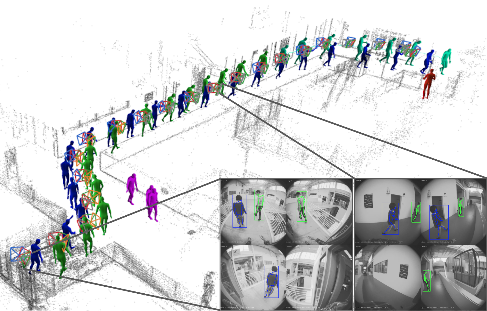
N. Yang , J. Straub, F. Zhang, R. Newcombe, J. Engel, and L. Ma
LAMP: Localization Aware Multi-camera People Tracking in Metric 3D World
IEEE Conference on Computer Vision and Pattern Recognition (CVPR), 2026
Project Video Code
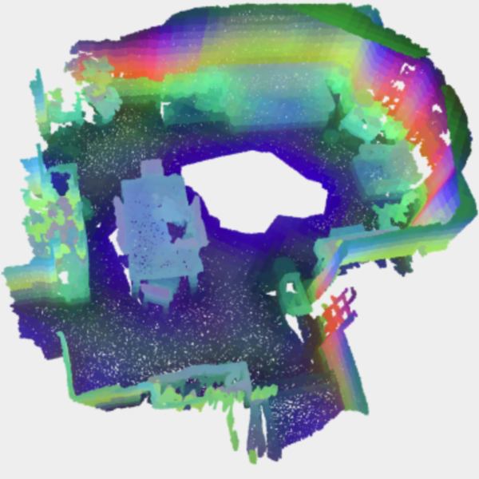
X. Wu, D. DeTone, D. Frost, T. Shen, C. Xie, N. Yang , J. Engel, R. Newcombe, H. Zhao, and J. Straub
Sonata: Self-Supervised Learning of Reliable Point Representations
IEEE Conference on Computer Vision and Pattern Recognition (CVPR), 2025
Highlight
Project Paper Code
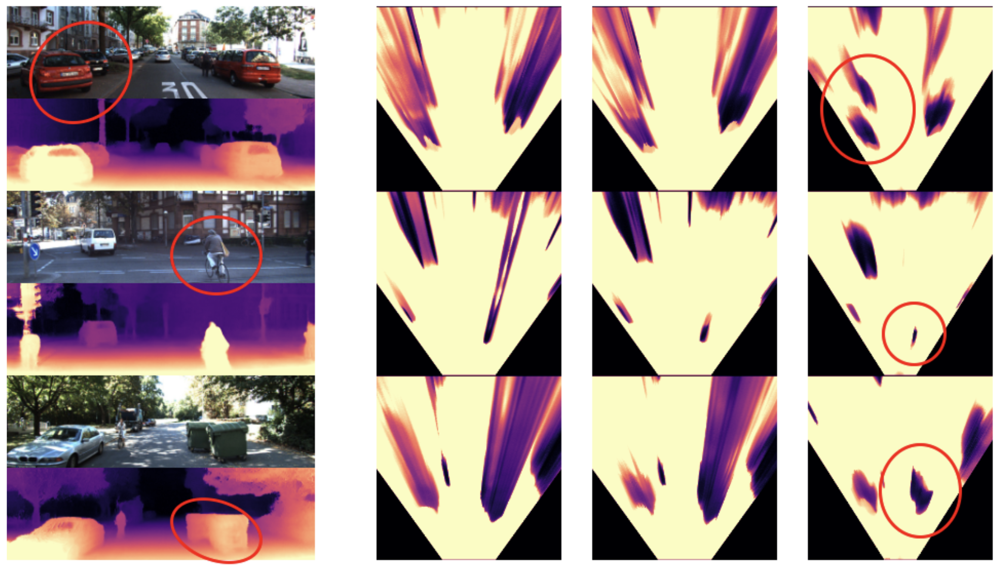
F. Wimbauer, N. Yang , C. Rupprecht, and D. Cremers
Behind the Scenes: Density Fields for Single View Reconstruction
IEEE Conference on Computer Vision and Pattern Recognition (CVPR), 2023
Project Paper Code Video
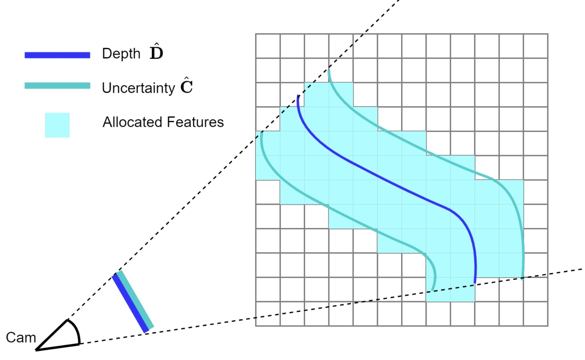
X. Zuo, N. Yang , N. Merrill, B. Xu, and S. Leutenegger
Incremental Dense Reconstruction from Monocular Video with Guided Sparse Feature Volume Fusion
IEEE Robotics and Automation Letters (RA-L), 2023
Paper Video
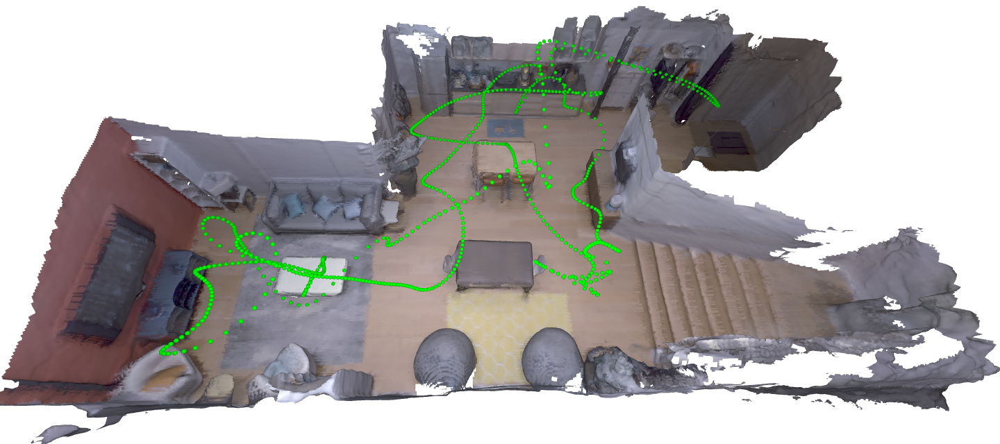
L. Köstler*, N. Yang* , N. Zeller, and D. Cremers (*equal contribution)
TANDEM: Tracking and Dense Mapping in Real-time using Deep Multi-view Stereo
Conference on Robot Learning (CoRL), 2021
Best Demo Award at 3DV 2021
Project Paper Code Video
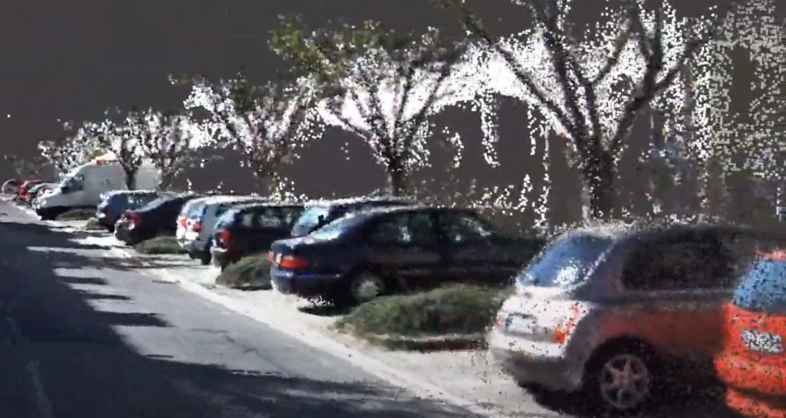
F. Wimbauer*, N. Yang* , N. Zeller, and D. Cremers (*equal contribution)
MonoRec: Semi-Supervised Dense Reconstruction in Dynamic Environments from a Single Moving Camera
IEEE Conference on Computer Vision and Pattern Recognition (CVPR), 2021
Project Paper Code Video
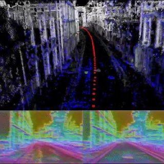
L. von Stumberg, P. Wenzel, N. Yang , and D. Cremers
LM-Reloc: Levenberg-Marquardt Based Direct Visual Relocalization
International Conference on 3D Vision (3DV), 2020
Project Paper
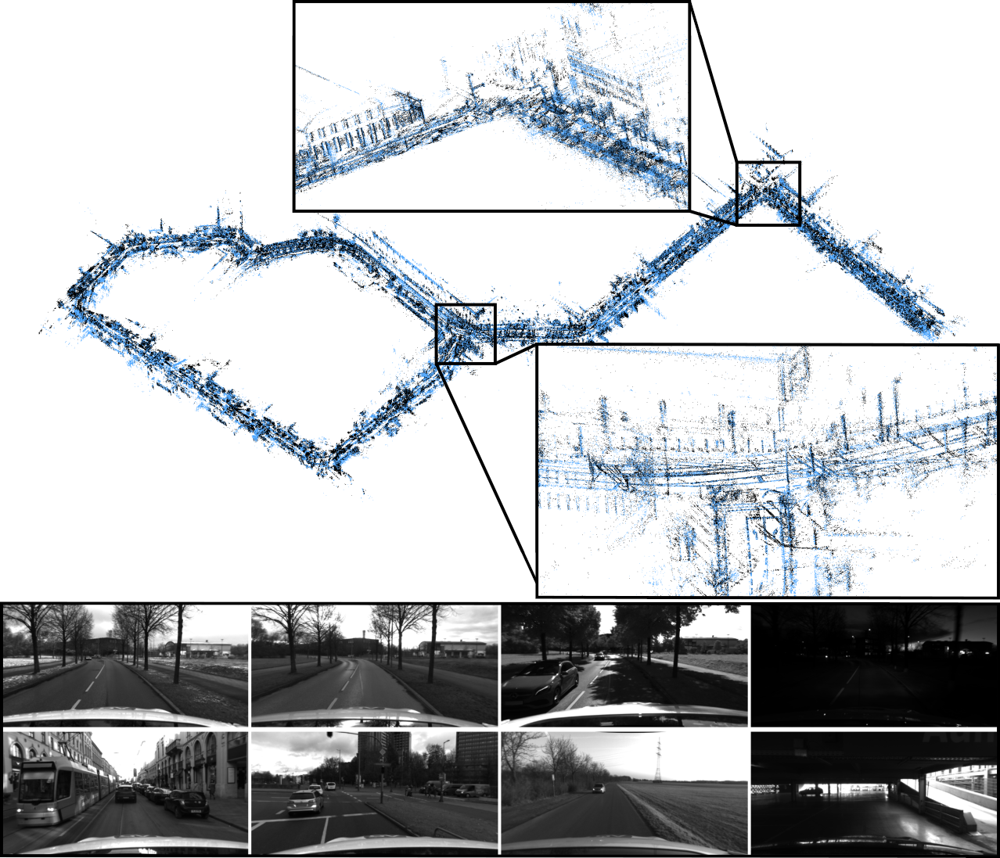
P. Wenzel, R. Wang, N. Yang , Q. Khan, Q. Cheng, L. von Stumberg, N. Zeller, and D. Cremers
4Seasons: A Cross-Season Dataset for Multi-Weather SLAM in Autonomous Driving
German Conference on Pattern Recognition (GCPR), 2020
Project Paper
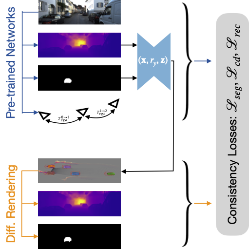
L. Köstler, N. Yang , R. Wang, and D. Cremers
Learning Monocular 3D Vehicle Detection without 3D Bounding Box Labels
German Conference on Pattern Recognition (GCPR), 2020
Project Paper
N. Yang , L. von Stumberg, R. Wang, and D. Cremers
D3VO: Deep Depth, Deep Pose and Deep Uncertainty for Monocular Visual Odometry
IEEE Conference on Computer Vision and Pattern Recognition (CVPR), 2020
Oral Presentation
Project Paper
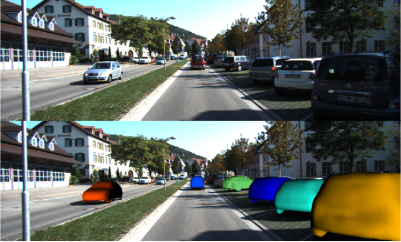
R. Wang, N. Yang , J. Stückler, and D. Cremers
DirectShape: Photometric Alignment of Shape Priors for Visual Vehicle Pose and Shape Estimation
IEEE International Conference on Robotics and Automation (ICRA), 2020
Project Paper
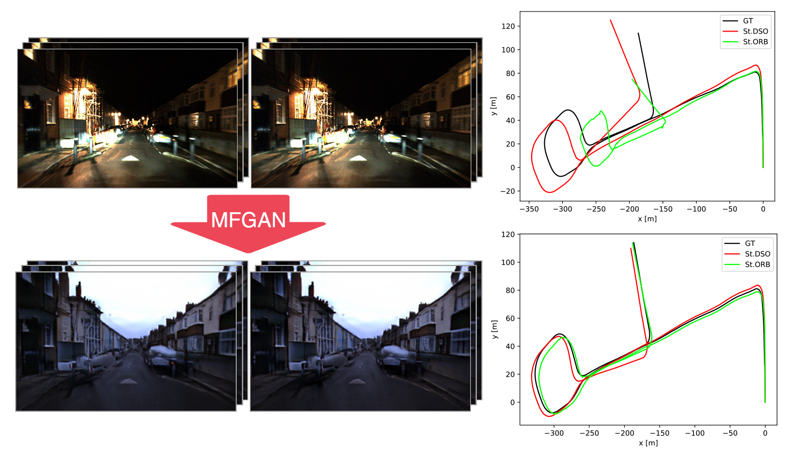
E. Jung*, N. Yang* , and D. Cremers (*equal contribution)
Multi-Frame GAN: Image Enhancement for Stereo Visual Odometry in Low Light
Conference on Robot Learning (CoRL), 2019
Full Oral Presentation
Paper Video
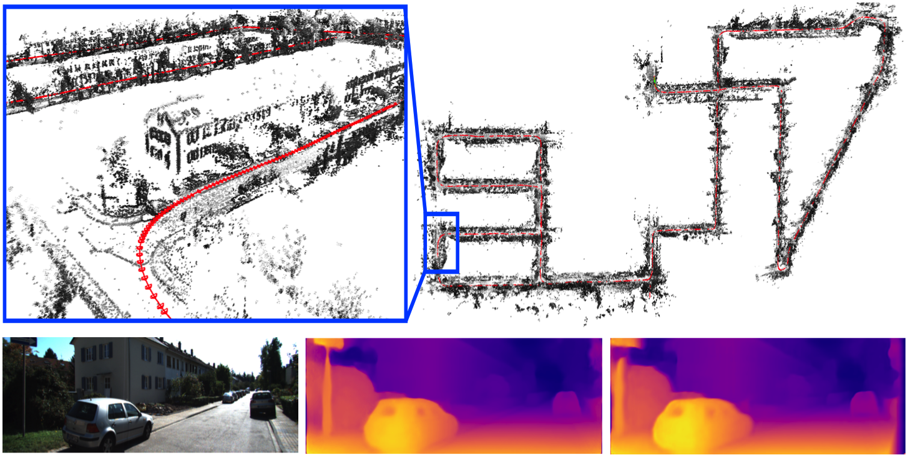
N. Yang , R. Wang, J. Stückler, and D. Cremers
Deep Virtual Stereo Odometry: Leveraging Deep Depth Prediction for Monocular Direct Sparse Odometry
European Conference on Computer Vision (ECCV), 2018
Oral Presentation
Project Paper
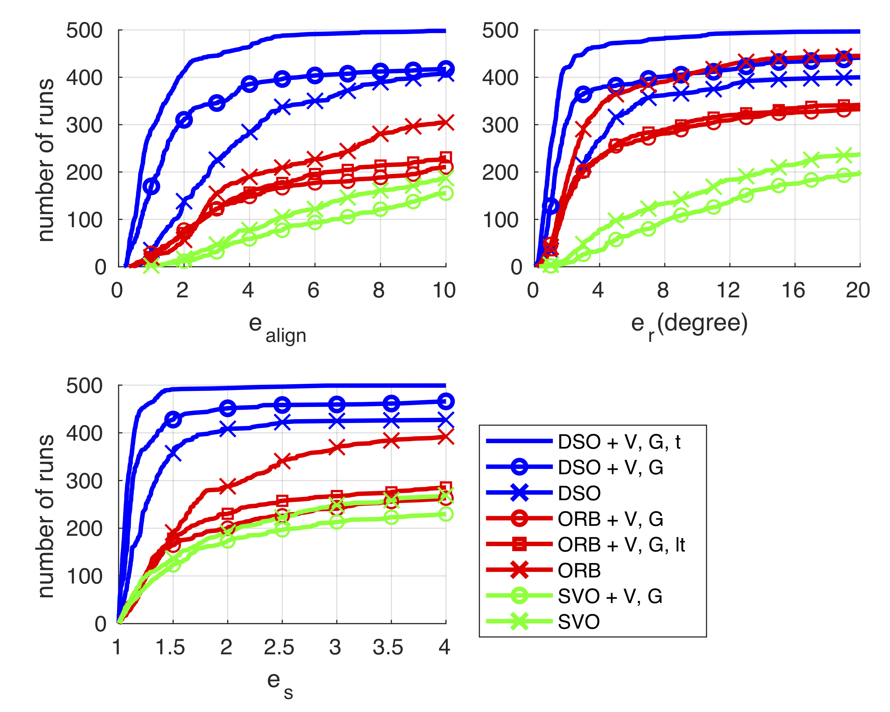
N. Yang* , R. Wang*, X. Gao, and D. Cremers (*equal contribution)
Challenges in Monocular Visual Odometry: Photometric Calibration, Motion Bias and Rolling Shutter Effect
IEEE Robotics and Automation Letters (RA-L) & Int. Conference on Intelligent Robots and Systems (IROS), 2018
Paper
Computer Vision: CVPR, ECCV, ICCV, T-PAMI
Machine Learning: ICLR, AAAI, NeurIPS, PR
Robotics: ICRA, IROS, RA-L, AURO, ISPRS, T-RO
Computer Graphics: SIGGRAPH
Map-based Localization for Autonomous Driving Workshop, ICCV 2021
Map-based Localization for Autonomous Driving Workshop, ECCV 2020